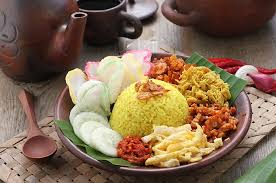

Nasi Kuning

20 Mei 2024
60 menit
6 porsi
Deskripsi
Nasi Kuning berasal dari zaman Kerajaan Majapahit dan awalnya hanya disajikan pada saat-saat tertentu oleh orang yang berstatus tinggi. Nama "Nasi Kuning" berasal dari warna kuning yang diperoleh dari kunyit, melambangkan keceriaan, kesejahteraan, dan kemakmuran.
Bahan-bahan
- Beras 3 cup (1 cup = 185-200 gr)
- Santan 200 ml
- Daun pandan 3 lembar
- Serai 4 batang
- Daun jeruk 2 lembar
- Daun salam 5 lembar
- Bawang merah 5 buah
- Bawang putih 4 buah
- Kunyit secukupnya
- Garam dan penyedap secukupnya
Langkah Pembuatan
- Cuci bersih beras, kemudian tiriskan.
- Blender kunyit dengan 3 sdm air, lalu saring dan ambil airnya.
- Iris bawang merah, bawang putih, dan jahe.
- Geprek serai, lengkuas, dan ikat daun pandan.
- Panaskan wajan, masukkan santan, air kunyit, bawang merah, bawang putih, jahe, serai, lengkuas, daun pandan, daun jeruk, dan daun salam.
- Tambahkan air sesuai takaran memasak nasi di rice cooker.
- Aduk terus hingga mendidih, lalu matikan api.
- Tuang santan berbumbu ke dalam beras di rice cooker.
- Jika kurang air, tambahkan secukupnya. Aduk hingga rata.
- Tekan tombol "cook" dan tunggu hingga matang.
- Aduk nasi agar bumbu merata.
- Sajikan dengan tempe orek, telur balado, dan bawang goreng.